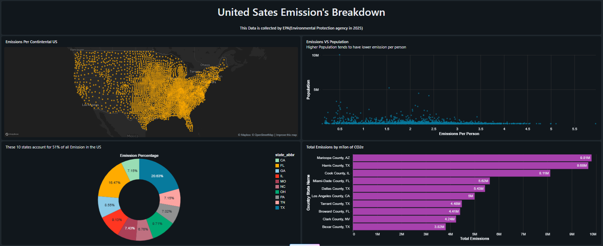

Where are emissions concentrated?
Aggregate emissions by state and rank the top ten states by total emissions.
A Databricks SQL analysis of emissions data collected by the Environmental Protection Agency in 2025, examining geographic concentration, emissions per person, population and the highest emitting regions.
The project turns a geographic emissions dataset into a set of focused SQL analyses rather than treating emissions as a single national number.
The analysis looks at total emissions by state and county, emissions per person, and the relationship between population and emissions per person.
Identify the states and county/state regions with the largest total emissions.
Calculate emissions per person using emissions divided by population.
Compare population against emissions per person to surface geographic patterns.
county_state_name · state_abbr · latitude · longitude
population · GHG emissions mtons CO2e · emissions per person
Aggregate emissions by state and rank the top ten states by total emissions.
Rank county/state records by total emissions to surface the highest-emitting regions.
Divide cleaned GHG emissions by population and rank regions by the resulting metric.
Compare population with emissions per person using a scatter visualization.
Select latitude and longitude alongside GHG emissions to create the geographic emissions map.
Clean the comma-formatted emissions field and divide emissions by population.
Aggregate emissions by state abbreviation and order the result to identify the top ten states.
Order county/state records by total emissions to surface the highest-emitting regions.
SELECT state_abbr,
SUM(
CAST(
REPLACE(`GHG emissions mtons CO2e`, ',', '')
AS DOUBLE
)
) AS Total_Emission
FROM emissinon.default.emissions_data
GROUP BY state_abbr
ORDER BY Total_Emission DESC
LIMIT 10;The project calculates an emissions-per-person metric instead of looking only at absolute emissions.
This creates a second lens for comparing regions: a place can have a large total emissions value while its emissions per person tell a different story.
The SQL converts the comma-formatted emissions field to DOUBLE before performing the calculation.
The dashboard explicitly identifies the top ten states as accounting for 51% of all emissions in the U.S.
State totals are produced with SUM after cleaning the emissions field and grouping by state abbreviation.
The dashboard ranks the ten county/state records with the largest total emissions.
Dashboard note Values above reproduce the ten visible records from the supplied dashboard screenshot and are presented in the same descending order as the dashboard.
The supplied Databricks dashboard combines a continental U.S. emissions map, population-versus-emissions scatter plot, state concentration donut and top-region emissions ranking.

Latitude and longitude are plotted as a symbol map to show the geographic distribution of emissions records.
Population is compared with emissions per person, with the dashboard describing the observed relationship as higher population tending to have lower emissions per person.
The top ten states are visualized as a percentage mix, with 51% of U.S. emissions attributed to those ten states.
The highest-emitting county/state records are ranked in a horizontal bar chart.
The dashboard identifies the top ten states as responsible for 51% of all U.S. emissions represented in the analysis.
The per-person metric prevents the analysis from relying only on absolute emissions and enables a population-normalized view.
The top-region ranking shows substantial variation in emissions across county/state records.
Map, scatter, state composition and ranking views provide complementary ways to interpret the same dataset.
The supplied dashboard shows concentration in the highest emitting states and county/state records.
Emissions per person is a calculated metric based on emissions divided by population.
The population-versus-emissions visualization describes a relationship in the dataset; it does not by itself establish why that relationship exists.
The supplied dashboard focuses on U.S. geographic emissions, even though the README describes the broader project as global CO₂ emissions analysis.
Workspace environment used to run the SQL analysis and build the dashboard.
Aggregation, ranking, type conversion and calculated metrics.
Latitude and longitude fields power the continental U.S. emissions map.
Map, scatter plot, donut chart and horizontal ranking bring different analytical questions into one view.
SQL notebook calculating emissions per person and ranking the result.
SQL notebook aggregating total emissions by state and limiting the output to the top ten.
SQL notebook ranking the highest-emitting county/state records.
Databricks Lakeview dashboard JSON containing the datasets, queries and visual specifications.